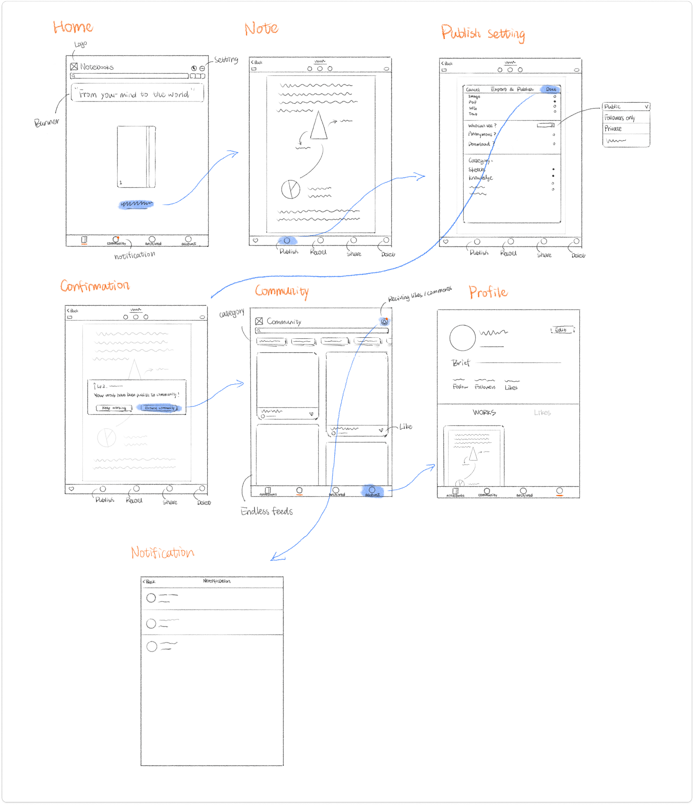
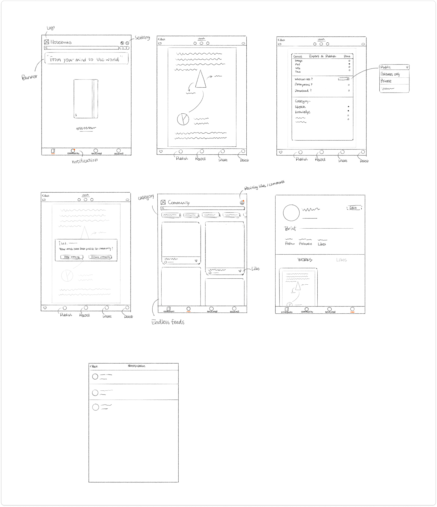
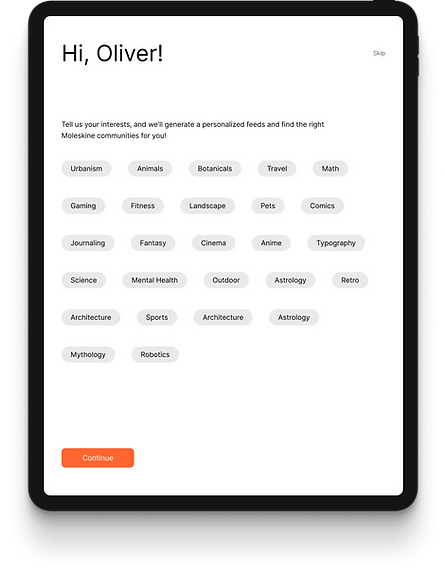
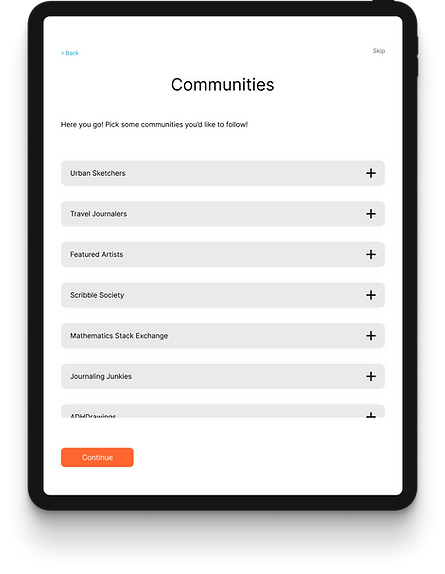
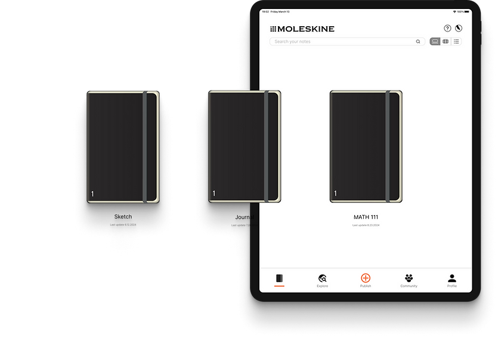
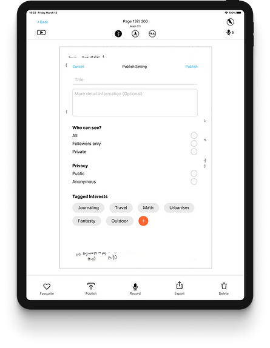
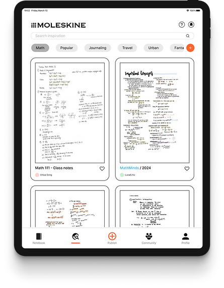

Moleskine
Note taking App
A social media feature for the Moleskine Notes app that allows creatives to share their work comfortably with like-minded individuals in a safe, judgment-free space.
Design Team
Jessica Anderson, Project Manager & UX Research
Tulio Esteves, UX Research Lead
Yanfeng Dong, UI Lead
My Role
Project Manager
UX/UI Researcher
Create scope of work · Competitive and comparative analysis · Develop surveys & user interview plan · Collect & synthesize findings · Lead daily scrum
Team
1 UI Lead
1 Research Lead
1 Product Manager
Timeline
2 weeks
Tools
Users needed a space to share work, find inspiration, and connect with like-minded creators.
Moleskine Smart Notebooks have long been a bridge between analog and digital creativity. However, users lacked a sense of community where ideas could flourish beyond personal notebooks.
Our team designed a social media feature for the Moleskine Notes app that creates a supportive environment for sharing creative work, with features including anonymous sharing options, community spaces, and constructive feedback mechanisms.
{{ s.title }}
{{ s.body }}
My Design Process
Let's talk to the users
Creatives use various note-taking methods and platforms to capture their ideas, organize their thoughts, and share their work with others.
We interviewed users who actively engage in note-taking and creative work to understand:
Questions Overview
{{ g.title }}
User Needs
I synthesized the user data using an affinity map and found the following user needs:
“{{ n.a }}{{ n.b }}{{ n.c }}”
During the ideation phase of the project, I conducted user interviews to build new personas and to inform the design. Together with the team, we prepared an interview script with open-ended questions, focusing on our target audiences’ values, motivations, and daily routines, and interviewed users remotely. We referenced the user interview findings throughout the entire design process.
User Persona
Synthesizing all the data from user interviews, together with insights from users views on the topics of Moleskine Notes app, note-taking and sharing creative work in spaces like Reddit, we created Oliver.
“I won't share my work unless it's perfect.”
Oliver is a creative person from the Bay Area.
How Moleskine can help Oliver
Creative Process
Synthesizing the user interview data and some online research: this is the current creative process we've come to understand within the Moleskine app!
Feature Prioritization
When it came to creating our feature prioritization matrix, our team agreed that "Inspiration" and "Sharing" were the parts of the process that were the most feasible to improve for our two-week sprint.
{{ m.title }}
User flow
{{ fn.body }}
Wireframes


Style guide
Usability Testing & Key Findings
Goal: Discover any issues or challenges users might face while using the new features, and see if the app meet the expected needs of the target audience.
Task 1: Upload a note to a community. Conducted 3 rounds of usability tests.
{{ is.body }}
Key Findings
{{ fd.title }}
{{ fd.body }}
Homepage

Interest-Based Personalization
The platform welcomes each member with their name, creating a warm personal touch. Users can select interest-based tags to receive customized content and find relevant communities that match their preferences.

Community Recommendations
Based on chosen interests, the platform suggests tailored communities the user is likely to enjoy.

Notebook viewing
{{ ob.body }}

Note Publishing
Choose who sees your posts: everyone, just your followers, or keep them private. Add interest tags to share your content with communities that match your passions.
Explore Feed
Explore posts that match your interests by using category filters like Math, Journaling, and Travel at the top of your feed. Adding interest tags to your own posts helps them find the right audience.

Looking Ahead
While our solution has made significant strides in creating a safe, inspiring space for creatives, we recognize that fostering a community is an ongoing process. Future considerations include:
In the end, our journey with Moleskine reminded us of a simple truth: creativity thrives in community.
By providing a space that balances the need for sharing with the desire for safety, we've helped Moleskine not just sell notebooks, but cultivate a vibrant, global creative ecosystem. And that's a story worth writing about, perhaps even in a Moleskine notebook.
Thank you for reading my case study!
Data Dignity →
An accessibility-first mobile app that empowers people to see, understand, and control their personal data